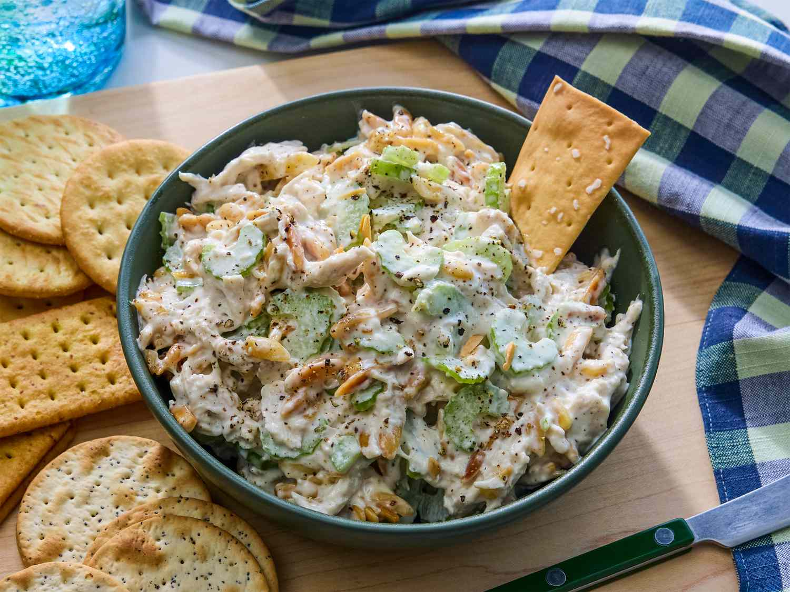

Chicken Salad

A delicious Chicken Salad Recipe the whole family will enjoy!
Everyone needs this best chicken salad recipe in their collection! This creamy homemade chicken salad is quick and easy to make with just a handful of everyday ingredients, is genius at using up leftovers, and perfect for warm weather picnics, potlucks, lunches, or light dinners.
Ingredients
- ½ cup blanched slivered almonds
- ½ cup mayonnaise
- 1 tablespoon lemon juice
- ¼ teaspoon ground black pepper
- 2 cups chopped, cooked chicken meat
- 1 rib celery, chopped
Steps
- Gather all ingredients.
- Place almonds in a skillet over medium-low heat. Cook until golden brown and toasted, shaking frequently and watching carefully, as they burn easily.
- Mix mayonnaise, lemon juice, and pepper together in a medium bowl until combined.
- Add chicken, toasted almonds, and celery; toss until just combined.
- Enjoy!
Home